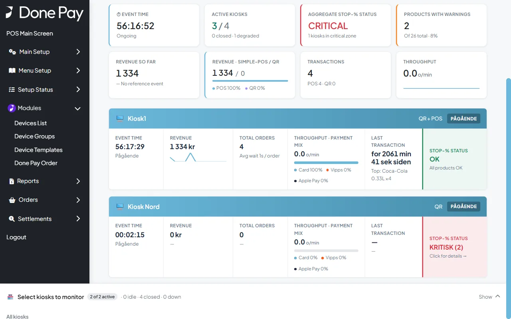

Done for arenaer
Hele kampdagen – fra QR-kode til oppgjør.
Publikum bestiller fra plassen og henter uten kø. Kioskene åpner og stenger med kampen, lageret følges i sanntid, og oppgjøret er gjort når arrangementet stenges.
Kasser, QR-kiosker og hovedlager styres fra samme sted – for én kiosk eller en hel arena.
Kampdagen i Done
- QR-kode per kioskEgen kode per kiosk, og én felles ved inngangen.
- Gjestens bestillingBestill fra plassen, hent uten kø.
- KasseneKun kort, satt opp med en QR-kode.
- KampdagsstyringKioskene åpner og stenger med kampen.
- LagerHovedlager, overføringer og Stopp-%.
- Under og etter kampenLive-overvåking og trygt oppgjør.
QR-kode per kiosk
Én QR-kode per kiosk – og én ved inngangen
Hver kiosk på arenaen får sin egen QR-kode med logo. En felles QR-kode ved inngangen lar publikum velge kiosken nærmest plassen sin.
-
Steg 1 av 2
Publikum velger kiosk selv
Den felles QR-koden åpner en side med alle kioskene. Åpne kiosker kan velges, stengte er tydelig merket.
- Rekkefølge og veiledning bestemmer du
- Én kode å henge opp, uansett antall kiosker
- Endres i admin uten nye QR-koder


-
Steg 2 av 2
Hver kiosk sin QR-kode
QR-koden ved en kiosk går rett til den kioskens meny. Koden lastes ned med logo fra admin.
- Egen velkomsttekst og stengt-melding per kiosk
- Logo, forsidebilde og tema per kiosk


Gjestens bestilling
Bestill fra plassen – hent uten kø
Publikum bestiller på egen mobil uten app. Bestillingen går rett til riktig kiosk, og gjesten henter når nummeret vises.
-
Steg 1 av 4
Menyen til kiosken
Gjesten ser bare det kiosken selger, sortert i kategorier med bilder og priser.
- Samme meny kan brukes på alle kioskene
- Utsolgte varer merkes automatisk

-
Steg 2 av 4
Tilpass bestillingen
Gjesten fjerner ingredienser og legger til ekstra, og prisen oppdateres med en gang.
- Fjern og ekstra, med pris per tillegg

-
Steg 3 av 4
Oversikt før betaling
Hele bestillingen med tilvalg og totalbeløp, før gjesten betaler.
- Endre antall eller fjern varer
- Gjesten kan avbryte

-
Steg 4 av 4
Mobilnummer, betaling og hentenummer
Gjesten oppgir mobilnummeret og betaler med kort i nettleseren. Bekreftelsen viser hentenummeret og en hente-QR.
- Ordrebekreftelse på SMS
- Hentenummeret vises på bekreftelsen
- Hente-QR kan skannes i kassen

Kassene ved kioskene
Kasser som er klare på minutter
Kassene i kioskene selger for samme kiosk som QR-koden, og de settes opp uten teknisk hjelp.
Bare kort
Kassene ved kioskene kan settes til kun kortbetaling, slik de fleste arenaer ønsker.
Ny kasse med en QR-kode
En kasse settes opp eller flyttes ved å skanne QR-koden fra en enhetsmal, og velge hvilken kiosk den selger for.
Hentedialog
Når gjesten viser kvitteringen, skanner den ansatte hente-QR-en og leverer ut bestillingen.

Kampdagsstyring
Kioskene åpner og stenger med kampen
Hver kiosk er en enhetsgruppe med sitt eget arrangement. Når arrangementet starter, åpner kiosken for salg. Før og etter ser publikum din egen stengt-melding.
-
Steg 1 av 4
Hver kiosk er en gruppe
I gruppen bestemmer du hvilke enheter og varer som hører til kiosken.
- QR-kode og kasser i samme gruppe
- Varene kiosken selger, med lagerbeholdning
- Stopp-% per kiosk

-
Steg 2 av 4
Start med åpningsbeholdning
Når arrangementet startes, bekrefter du åpningsbeholdningen kiosken får fra hovedlageret.
- Hovedlagerets beholdning vises for hver vare
- Valgfritt SMS-varsel når lageret blir lavt

-
Steg 3 av 4
Kiosken tar imot bestillinger
Kiosken åpner for salg, og landingssiden viser den som åpen. De andre kioskene står fortsatt stengt.
- Kiosker åpnes og stenges én og én
- Beholdningen følges i sanntid


-
Steg 4 av 4
Stengt før og etter
Uten aktivt arrangement viser kiosken stengt-meldingen du har skrevet, i stedet for menyen.
- Egen tekst per kiosk
- Ingen bestillinger utenfor arrangementet


Simulering
Flytt en kasse til en annen kiosk – midt i kampen
Blir det kø i én kiosk, flyttes en kasse dit på sekunder. Den ansatte skanner QR-koden til enhetsmalen, velger ny kiosk, og omsetningen kassen allerede har tatt, gjøres opp på den gamle kiosken.
Simulering av skjermene på kassen. Navn, tall og tidspunkter er eksempler.
Lager
Riktig vare på riktig kiosk
Varene tas imot i hovedlageret og fordeles til kioskene når arrangementet starter. Underveis kan du flytte varer mellom kiosker og telle opp.
-
Steg 1 av 4
Varemottak i hovedlageret
Varemottak registreres med leverandør og følgeseddel. Hovedlageret viser hva som er ledig og hva som er fordelt.
- Stykk eller forpakning, for eksempel kasser
- Historikk over varemottak

-
Steg 2 av 4
Flytt varer under kampen
Går en kiosk tom, flytter du varer fra hovedlageret eller en annen kiosk – med en årsak.
- Fra hovedlager eller mellom kiosker
- Årsak på hver overføring

-
Steg 3 av 4
Opptelling under arrangementet
Ved telling låses kiosken kort, og systemet viser avviket mellom system og faktisk beholdning.
- Låser salget mens du teller
- Tellehistorikk per arrangement

-
Steg 4 av 4
Utsolgt før det er tomt
Stopp-% stopper salget av en vare på QR før den går helt tom. Publikum ser varen som utsolgt.
- Terskel per kiosk
- Kioskens status vises i overvåkingen


Under kampen
Hele arenaen på én skjerm
Live-overvåkingen viser alle kioskene samtidig: salg, bestillinger, tempo og lagerstatus.
-
Steg 1 av 1
Status for alle kiosker
Toppen viser hele arrangementet, kortene under viser hver kiosk.
- Omsetning fordelt på kasse og QR
- Antall bestillinger og tempo
- Stopp-% status per kiosk
Ordreoversikten
De ansatte ser QR-bestillingene i ordreoversikten og på kjøkkenskjermen, sammen med salget fra kassene.
Henteskjermen
Når bestillingen er klar, vises hentenummeret på skjermen ved kiosken.
Utlevering
Den ansatte skanner hente-QR-en på gjestens kvittering og leverer ut.
Etter kampen
Stengt, gjort opp og låst
Når kampen er over, stenger du arrangementet per kiosk. Systemet gjør opp kassene og låser arrangementet.
-
Steg 1 av 2
Steng kiosken
Stengingen bekreftes før den gjennomføres, og den kan ikke angres.
- Én kiosk om gangen

-
Steg 2 av 2
Oppgjør og sluttbeholdning
Nye salg stoppes, kassene i gruppen gjøres opp automatisk, og sluttbeholdningen lagres.
- Automatisk kasseoppgjør for kassene i gruppen
- Sluttbeholdning lagret for hver vare
- Dagsoppgjør og rapporter per kiosk

Prøv selv
Skann og se hvordan det oppleves
Dette er QR-kodene fra demoarenaen vår. Kioskene er åpne bare når et demo-arrangement er startet – ellers ser du stengt-meldingen.
Demoen viser hele flyten fram til betaling. Betaling er ikke aktivert, så ingen kort blir belastet.
 Felles QR-kodeVelg kiosk
Felles QR-kodeVelg kiosk Kiosk NordQR-kode
Kiosk NordQR-kode Kiosk SørQR-kode
Kiosk SørQR-kode Kiosk ØstQR-kode
Kiosk ØstQR-kode Kiosk VestQR-kode
Kiosk VestQR-kode
Vil du se Done på din arena?
Vi setter opp en demo med dine kiosker og din meny og viser hvordan en kampdag ser ut hos deg.